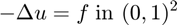
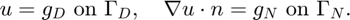
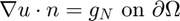
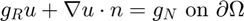
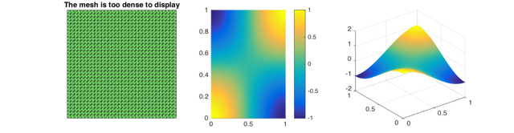
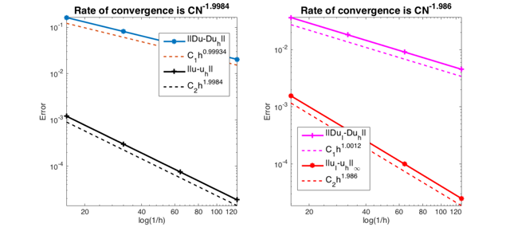
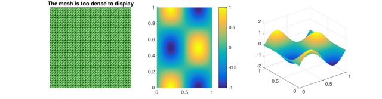
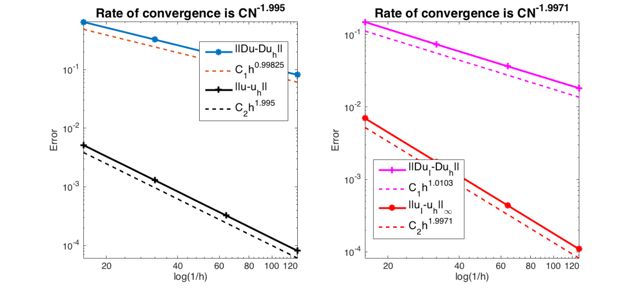

RATE OF CONVERGENCE OF NONCONFORMING LINEAR ELEMENT FOR POISSON EQUATION
This example is to show the rate of convergence of CR non-conforming linear finite element approximation of the Poisson equation on the unit square:

for the following boundary condition:
- Non-empty Dirichlet boundary condition. 
- Pure Neumann boundary condition. .
- Robin boundary condition. 
Contents
Setting
[node,elem] = squaremesh([0,1,0,1],0.25);
option.L0 = 2;
option.maxIt = 4;
option.printlevel = 1;
option.elemType = 'CR';
option.plotflag = 1;
Non-empty Dirichlet boundary condition.
pde = sincosdata; bdFlag = setboundary(node,elem,'Dirichlet','~(x==0)','Neumann','x==0'); femPoisson(node,elem,pde,bdFlag,option);
Multigrid V-cycle Preconditioner with Conjugate Gradient Method
#dof: 3136, #nnz: 11040, smoothing: (1,1), iter: 12, err = 2.67e-09, time = 0.076 s
Multigrid V-cycle Preconditioner with Conjugate Gradient Method
#dof: 12416, #nnz: 44608, smoothing: (1,1), iter: 12, err = 2.62e-09, time = 0.042 s
Multigrid V-cycle Preconditioner with Conjugate Gradient Method
#dof: 49408, #nnz: 179328, smoothing: (1,1), iter: 12, err = 2.57e-09, time = 0.12 s
Table: Error
#Dof h ||u-u_h|| ||Du-Du_h|| ||DuI-Du_h|| ||uI-u_h||_{max}
800 6.25e-02 1.20226e-03 1.62318e-01 3.64423e-02 1.55737e-03
3136 3.12e-02 3.01351e-04 8.12476e-02 1.81858e-02 3.97664e-04
12416 1.56e-02 7.53872e-05 4.06349e-02 9.08851e-03 1.00099e-04
49408 7.81e-03 1.88499e-05 2.03188e-02 4.54371e-03 2.50778e-05
Table: CPU time
#Dof Assemble Solve Error Mesh
800 6.32e-02 1.17e-03 6.00e-02 0.00e+00
3136 9.14e-03 7.62e-02 1.00e-02 3.00e-02
12416 3.78e-02 4.23e-02 2.00e-02 2.00e-02
49408 1.27e-01 1.25e-01 7.00e-02 9.00e-02
  Pure Neumann boundary condition.
pde = sincosNeumanndata;
bdFlag = setboundary(node,elem,'Neumann');
femPoisson(node,elem,pde,bdFlag,option);
Multigrid V-cycle Preconditioner with Conjugate Gradient Method
#dof: 3136, #nnz: 11325, smoothing: (1,1), iter: 13, err = 4.57e-09, time = 0.024 s
Multigrid V-cycle Preconditioner with Conjugate Gradient Method
#dof: 12416, #nnz: 45181, smoothing: (1,1), iter: 14, err = 1.91e-09, time = 0.043 s
Multigrid V-cycle Preconditioner with Conjugate Gradient Method
#dof: 49408, #nnz: 180477, smoothing: (1,1), iter: 14, err = 3.96e-09, time = 0.13 s
Table: Error
#Dof h ||u-u_h|| ||Du-Du_h|| ||DuI-Du_h|| ||uI-u_h||_{max}
800 6.25e-02 5.18787e-03 6.47906e-01 1.49052e-01 6.33147e-03
3136 3.12e-02 1.30793e-03 3.24817e-01 7.31524e-02 1.60037e-03
12416 1.56e-02 3.27672e-04 1.62518e-01 3.64052e-02 4.01216e-04
49408 7.81e-03 8.19609e-05 8.12726e-02 1.81812e-02 1.00375e-04
Table: CPU time
#Dof Assemble Solve Error Mesh
800 3.74e-02 6.52e-04 0.00e+00 0.00e+00
3136 9.45e-03 2.35e-02 3.00e-02 1.00e-02
12416 4.33e-02 4.25e-02 2.00e-02 3.00e-02
49408 1.31e-01 1.33e-01 9.00e-02 1.10e-01
 Pure Robin boundary condition.
pdeRobin = sincosRobindata;
bdFlag = setboundary(node,elem,'Robin');
femPoisson(node,elem,pdeRobin,bdFlag,option);
Multigrid V-cycle Preconditioner with Conjugate Gradient Method
#dof: 3136, #nnz: 11328, smoothing: (1,1), iter: 12, err = 1.82e-09, time = 0.052 s
Multigrid V-cycle Preconditioner with Conjugate Gradient Method
#dof: 12416, #nnz: 45184, smoothing: (1,1), iter: 11, err = 9.89e-09, time = 0.044 s
Multigrid V-cycle Preconditioner with Conjugate Gradient Method
#dof: 49408, #nnz: 180480, smoothing: (1,1), iter: 12, err = 1.78e-09, time = 0.12 s
Table: Error
#Dof h ||u-u_h|| ||Du-Du_h|| ||DuI-Du_h|| ||uI-u_h||_{max}
800 6.25e-02 5.14818e-03 6.47717e-01 1.48743e-01 6.97115e-03
3136 3.12e-02 1.29781e-03 3.24794e-01 7.31131e-02 1.75333e-03
12416 1.56e-02 3.25127e-04 1.62515e-01 3.64002e-02 4.38609e-04
49408 7.81e-03 8.13241e-05 8.12722e-02 1.81806e-02 1.09622e-04
Table: CPU time
#Dof Assemble Solve Error Mesh
800 2.88e-02 6.74e-04 0.00e+00 1.00e-02
3136 8.03e-03 5.17e-02 1.00e-02 1.00e-02
12416 3.50e-02 4.38e-02 2.00e-02 2.00e-02
49408 1.16e-01 1.18e-01 8.00e-02 1.10e-01
 Conclusion
The optimal rate of convergence of the H1-norm (1st order) and L2-norm (2nd order) is observed. No superconvergence for |DuI-Duh|.
MGCG converges uniformly in all cases.